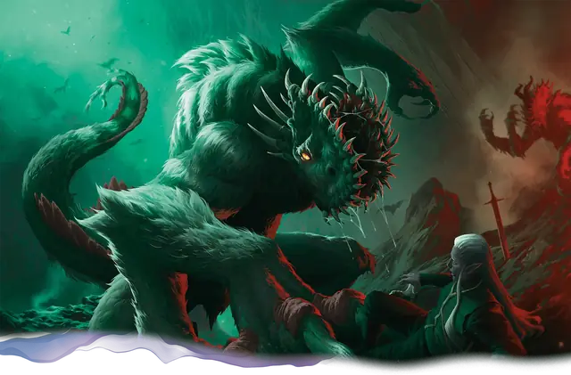

Гуг
Gug
Огромная Аберрация, Хаотичная Злая

Класс Защиты 16 Инициатива +6 (16)
Хиты 250 (20к12 + 120)
Скорость 40 футов
| мод | спас | ||
|---|---|---|---|
| СИЛ | 22 | +6 | +10 |
| ЛОВ | 15 | +2 | +2 |
| ТЕЛ | 23 | +6 | +10 |
| мод | спас | ||
|---|---|---|---|
| ИНТ | 7 | −2 | −2 |
| МДР | 16 | +3 | +3 |
| ХАР | 11 | +0 | +0 |
Чувства Тёмное зрение 120 футов, пассивное Восприятие 17
Языки знает Глубинную речь, но не говорит
Опасность 12 (8 400 опыта; БВ +4)
Особенности
Тактика стаи. Гуг совершает с Преимуществом броски атаки по существам, если его союзник, не имеющий состояния Недееспособный, находится в пределах 5 футов от цели.
Действия
Мультиатака. Гуг совершает две атаки Когтистой рукой и использует Пережёвывание.
Когтистая рука. Бросок рукопашной атаки: +10, досягаемость 10 фт. Попадание: 22 (3к10 + 6) Рубящего урона. Если цель — существо Среднего размера или меньше, оно Схвачено (Сл освобождения от захвата 16) одной из двух рук.
Пережёвывание. Спасбросок Ловкости: Сл 18, вплоть до двух Схваченных гугом существ Среднего размера или меньше. Провал: Гуг засовывает цель в пасть и жуёт её, а состояние Схваченный оканчивается. Пережёвываемое существо Опутано, а также имеет Укрытие наполовину от атак и прочих эффектов, исходящих снаружи гуга; кроме того, оно получает 10 (3к6) Колющего урона в начале каждого хода гуга. Гуг может удерживать в пасти вплоть до четырёх существ за раз.
Существо в пасти гуга может действием совершить проверку Силы (Атлетика) Сл 16, чтобы освободиться; при успехе оно теряет состояние Опутанный и перемещается в незанятое пространство в пределах 5 футов от гуга. Если гуг умирает, проглоченное существо теряет состояние Опутанный и может освободиться из трупа, потратив 5 футов перемещения и оказываясь на выходе Опрокинутым.
Бонус мастерства +4
Среда обитания Подземье
Сокровища Оружейные
Гуг
Таящийся в пещерах аберрантный обжора
Гуги — исполинские подземные чудовища, чьи головы разделены надвое зубастыми вертикальными пастями. Эти скрытные хищники предпочитают Гуманоидов в качестве добычи. Гуги боятся и ненавидят упырей — то ли потому, что соперничают с ними за власть над потаёнными некрополями и костницами Подземья, то ли из-за некоего проклятия, обрекающего гугов на жизнь под землёй.